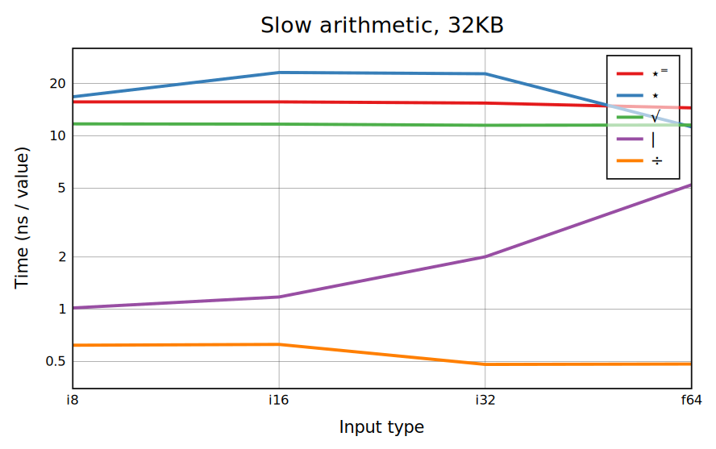
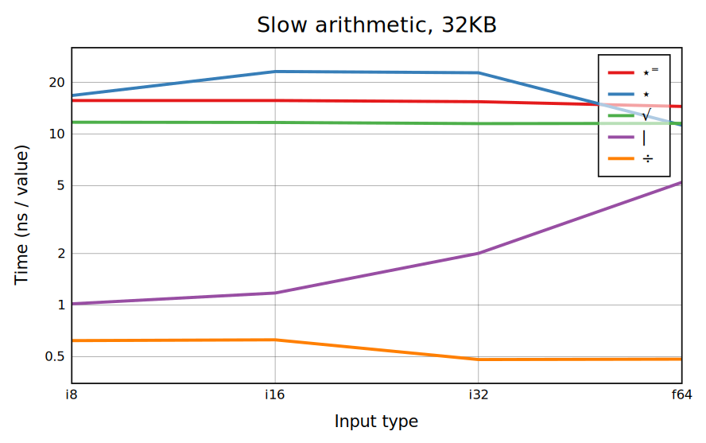
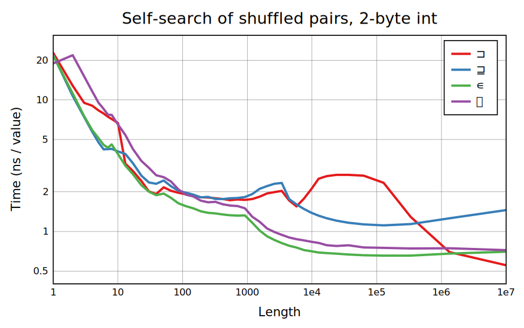
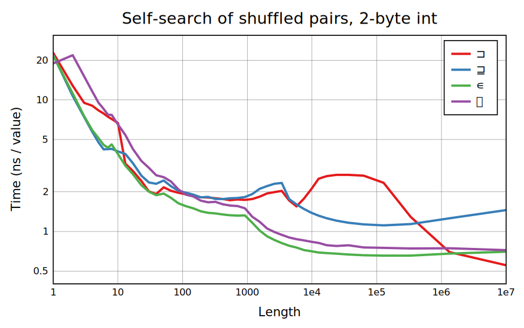

Not all benchmarks are included on this page. Header links go to pages with full benchmarks and sometimes extra explanation.
The benchmarks found in bencharray are taken on a Skylake i5-6200U processor using CBQN compiled with make o3n-singeli. It's not a powerful CPU but does support the x86 extensions like AVX2 used by the Singeli build.
The arithmetic functions +-×⌈⌊, and comparisons, are standard SIMD functionality. With +-× an overflow check is needed, and if it happens a result in a larger type needs to be created.
Most other primitives, including ÷√⋆ and ⋆⁼, require conversion to floats, so will ideally run at the same speed for all types. ÷ and monadic √ have native SIMD support. Libraries to compute others using SIMD exist but CBQN doesn't use anything like this yet. Dyadic | is kind of weird as it has faster implementations on integers, but they tend to be complicated.
Folds and scans are defined as a sequential evaluation, but for operand functions that are associative and commutative, evaluation can be reordered to give efficient SIMD implementations. These include +-×⌈⌊ on integers, ⌈⌊ on floats, and many boolean functions. Because floating-point + (along with - and ×) isn't exactly associative, we have •math.Sum to perform a fast sum with unspecified ordering. CBQN still has a few gaps in coverage, especially in scan. Uncovered cases run at about 5ns/value because that's the overhead of calling a primitive function.
If it had no overhead, Table would have the same per-output timing as arithmetic, or sometimes better as overflow checking can be done purely using the range of both arguments. This is attainable for large right arguments but CBQN does a lot of copying that prevents it from reaching that performance. For smaller right arguments the limiting operation is a constant Replicate (/) on the right argument, or sections of it.

BQN uses AVX2 for most cases of selection, with shuffles on small ùï© sizes and the gather instruction on larger ones (unfortunately gather is slower than scalar code prior to Skylake in 2015). AVX2 can shuffle 16 bytes or 8 4-byte values in one instruction, giving the various steps as BQN blends more registers together. The 16KB benchmark shows these small sizes better where the 1e6-element benchmark is limited by write bandwidth. selection from a boolean array is usually slower because it requires reading the right byte from memory and then picking out the right bit within it, but for larger ùï© it takes up less cache space and can be faster. For a small ùï© but large ùï®, ùï© is temporarily converted to 1-byte values so that it runs at the same speed as 1-byte selection.
The speed of Reshape with a large result should essentially be limited by the amount of memory written. The current method is to copy the argument to the result, then repeatedly double it until it reaches a suitable block size for filling the rest of the result. There are special cases for 1-byte and 8-byte blocks; strangely, these measure slower than the general case, giving the bumps at the left of the first graph. We've left them in on the grounds that it may be specific to my CPU, and if not, later compiler and libc improvements could fix these cases (there's nothing obviously wrong with the emitted code).
Replicate is a complicated family of functions, and CBQN does a lot of work to get consistent worst-case performance and take advantage of special cases: sparse input, and booleans with 1s and 0s mostly grouped together. Except for the grouped case, each algorithm takes some amount of time to process each input value, and some to produce an output value, and CBQN chooses between them based on the density. Note that the graphs for a boolean argument use ns/input and those for the general case use ns/output! In the flat sections for the boolean case, the performance doesn't depend on density at all, usually because the same writes are performed regardless, just overlapping more when the density is smaller.
The benchmarks here are not very complete. The first shows how performance scales with the number of ¬Ø1s in the argument; when there are a lot Replicate is used to filter out these values and avoid excessive branching. The second concerns a sorted ùï® value, so that the groups are slices from ùï©.
Searching and sorting are the heaviest of BQN's commonly used functions, performance-wise. Element size is very important, as doubling it often slows things down by more than a factor of two.
For 1- and 2-byte elements, lookup tables usually fit entirely in L1 cache (2-byte tables with large elements can be iffy). Lookup tables are so fast that it doesn't make sense to try for adaptivity on these arguments.
For larger elements, comparison sorting and hash tables are usually needed, and adaptive sorting can be used. CBQN doesn't have particularly fast implementations of these yet. Some cases of 4-byte elements are better handled by radix partitioning plus lookup tables.
Currently CBQN has solid counting and radix sort implementations used for 1 to 4-byte elements, and uses the generic Timsort for 8-byte elements. 4-byte sorting is competitive with the state of the art for random elements but isn't adaptive at all.
The x-axis format here is used to display a small searched-in array (ùï® for ⊐ and ⊒, and ùï© for ∊) on the left and a small searched-for array (the other argument) on the right. "Half hits" means that half the values in the searched-for argument are found at some index, and is tough on branchy implementations; depending on the application all hits could be more relevant.
There is special code for 1- and 2-byte integers, and a small searched-in argument. SIMD searches would still be faster for some of these cases. Larger types are handled with generic hash table code.
CBQN has fairly good code for all CPU-native types (and boolean, not shown). The function Classify (⊐) is troublesome because of the way indices depend on the number of unique elements seen so far, a problem that dyadic ⊐ (or ⊐˜) doesn't have. ⍷ is just implemented as ∊⊸/ for lengths above 1, which is hardly slower than ∊.
Cases with a small argument (bound of 8 to 20 depending on type and function) are handled with all-pairs comparisons that use the comparison branchlessly, although a SIMD implementation could be faster. 1-byte and 2-byte cases use a lookup table otherwise, with sparse initialization for the 2-byte table for smaller sizes giving the corner at 1000 or a little higher. Both ⊒ and ⊐ are slowed down at large sizes because they need a 4-byte instead of 1-byte table, and there are some bumps in ⊐ because it has to branch on table lookups.
4- and 8-byte cells have specialized hash tables. 4-byte cases other than ⊐ also have a fallback using two rounds of radix moves plus a table on the remaining two bytes, keeping the cost bounded at sizes above 1e5. It's slower than sorting because the radix moves need to be undone at the end, so a self-search function takes a total of 4 moves plus a table lookup, while sorting only needs 4 moves.


 
